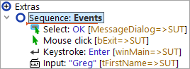
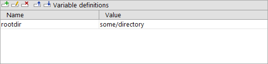
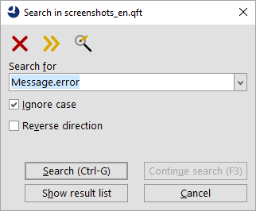
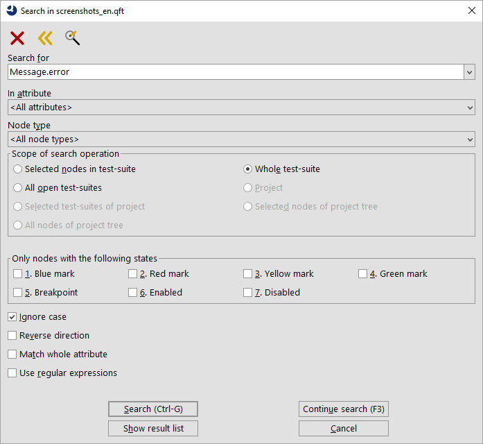
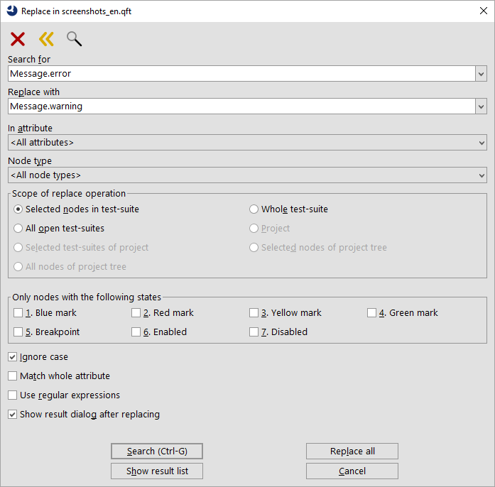
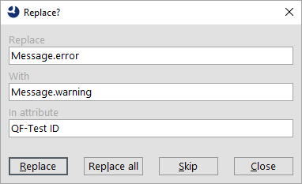

| Version 6.0.3 |
This chapter explains the structure of QF-Test's main window.
When you are done reading, it might be a good
idea to run QF-Test and try things out. In the »Help« menu there is an entry labeled »Tutorial«
that should bring up your web browser with a hands-on, learning-by-doing
tutorial. Should this fail because QF-Test cannot determine your system's standard browser, the
tutorial can be found in the directory
qftest-6.0.3/doc/tutorial, where a PDF version
is also available.
 The first part of the video 'Main window
and the System under Test' shows the structure of the QF-Test main window.
The first part of the video 'Main window
and the System under Test' shows the structure of the QF-Test main window.
Automating a GUI test basically requires two things: control structure and data. The control structure defines what to do and when to do it. The data for a test consists of information about the SUT's GUI components, the events that will be triggered and the expected results.
QF-Test combines all of these into one data structure, a tree hierarchy that we call a test-suite. The elements of the tree are called nodes. Nodes can contain child nodes (often just called children) and are themselves contained in a parent node (or just parent). The root node of the tree represents the test-suite as a whole.
There are more than 60 different kinds of nodes all of which are explained in detail in the reference manual. Some nodes are used as containers for data while others control the execution of a test. All of them have their own unique set of attributes.
The attributes of the currently selected node are displayed to the right of the tree in a detail view which can be toggled on and off via the »View«-»Details« menu item.
|
|  |
||
|
| Figure 2.1: Structure of a test-suite | ||
The image above shows an example for a simple test-suite. The attributes of the node named "Simple test" can be edited in the detail view to the right.
The basic structure of a test-suite and thus the child nodes of the 'Test-suite' root node is fixed. An arbitrary number of 'Test-set' and 'Test-case' with or without 'Dependency' nodes are followed by the 'Procedures', 'Extras' and 'Windows and components' nodes. The 'Procedures' node holds 'Packages' and 'Procedures' which are explained further in section 8.5. The 'Extras' node is a kind of playground or clipboard where all kinds of nodes can be added for experimentation or temporary storage. The windows and components of the SUT's user interface are represented as 'Window' and 'Component' nodes which are located below the 'Windows and components' node.
To get detailed information about a node or one of its attributes, click on it with the right mouse button and select »What's this?« from the context menu. This will bring up a browser displaying the corresponding section of the reference manual.
Editing a test-suite falls into two categories: operations like Cut/Copy/Paste on the tree's nodes and changing the attributes of a node. The latter can be done either by editing the fields in the detail view and selecting OK or pressing [Return], or by bringing up a dialog for the selected node with »Edit«-»Properties« or [Alt-Return] and changing the values there. If you change some values in the detail view and forget to press OK before moving the selection to another node, QF-Test will pop up a dialog with the changed values, asking you to either confirm your changes or discard them. This feature can be turned off with the option Ask before implicitly accepting detail modifications.
Some non-obvious key-bindings may come in handy when editing multi-line text attribute: [Ctrl-TAB] and [Shift-Ctrl-TAB] move the focus out of the text field, while [Ctrl-Return] is a shortcut to select the OK button.
An extremely useful feature is the »Edit«-»Undo« function ([Ctrl-Z]) which will take back any kind of change made to the test-suite, including recordings or use of the replace dialog. Changes are undone step by step. If you find you went too far and undid more than you wanted, you can use »Edit«-»Redo« ([Ctrl-Y]) to undo the undone. The number of steps that can taken back are limited only by available memory and can be configured with the option Number of undo levels per suite (default 30).
Though the key-bindings for tree navigation are similar to those of most tree components, it won't hurt to mention them here. Besides, QF-Test comes with a few non-standard bindings that may come in handy.
The cursor keys are used for basic navigation. [Up] and [Down] are obvious. [Right] either expands a closed node or moves down one row while [Left] closes an open node or moves to its parent.
QF-Test's trees support a special variant of multi-selection. Multiple discontinuous regions can be selected, but only among siblings, i.e. children of the same node. If multi-selection across the whole tree were allowed, cutting and pasting nodes would become a real brain-teaser. Keys to try are [Shift-Up] and [Shift-Down] to extend the selection, [Ctrl-Up] and [Ctrl-Down] to move without affecting the selection and [Space] to toggle the selection of the current node. Similarly, mouse-clicks with [Shift] extend the selection while clicks with [Ctrl] toggle the selection of the node being clicked on.
Special bindings include [Alt-Right] and [Alt-Left] which recursively expand or collapse a node and all of its children. [Alt-Down] and [Alt-Up] can be used to move to the next or previous sibling of a node, skipping the intermediate child nodes.
QF-Test keeps a history of recently visited nodes. [Ctrl-Backspace] will take you back to the previously selected node. Also worthy of note are [Ctrl-Right] and [Ctrl-Left] which will scroll the tree to the right or left if it doesn't fit its frame.
When inserting a new node or pasting in a copy of some other nodes, the insertion marker shows the place where the nodes will end up.
|
|  | ||
|
| Figure 2.2: Insertion marker | ||
Nodes are always inserted after the selected node. If the selected node is expanded, the new node is inserted as the first child of the selected node, otherwise it becomes a sibling of same. This behavior will take a little to get used to, especially for long-time users of the Windows explorer. However, there is no other way to insert a node at a definite position. In the example shown in figure 2.2 above, a new node would be inserted as the first child of the sequence called "Events", just before the 'Mouse event'.
Nodes can be copied and pasted or moved around within a test-suite or to another suite. The standard keyboard shortcuts for cut, copy and paste, [Ctrl-X], [Ctrl-C] and [Ctrl-V] are available as well as entries in the context menu.
2.0+ Alternatively, nodes can be moved using standard Drag&Drop operations. The default operation will move the selected node(s). If the [CTRL] key is held down during the drop, the nodes are copied instead.
While dragging the mouse over the tree of a test-suite, the insertion marker shows where the nodes will be dropped when the mouse button is released and whether the operation is allowed. A green marker signals a legal operation, a red marker an illegal one. Nothing will happen if the nodes are dropped on an illegal target position.
During the drag you can expand or collapse nodes by dragging the mouse cursor over the expansion toggle and keeping it there for a moment. That way you can easily navigate to the desired target location without interrupting and restarting the drag.
The Drag&Drop operation can be aborted at any time by pressing [Esc].
Some nodes can be transformed into different node types, which is a lot more convenient than first creating the desired target node and then copying over the required attributes. Examples of interchangeable nodes are 'Sequence' and 'Test-step' or 'Server script' and 'SUT script'. The transformation of a node is possible only if its childnodes and its current position in the tree are also valid for the desired target node. The potential transformation targets can be selected from the entry »Transform node into« in the context menu. If the entry is not available there are no valid target nodes. In that case, moving the node to the 'Extras' node first may help.
You can find more details about the conversion mechanism under Details about transforming nodes.
In various places QF-Test employs tables to view and edit a set of values, e.g. when defining variables or for checks of multiple elements.
|
|  | ||
|
| Figure 2.3: Example table | ||
The buttons above the tables have the following keyboard shortcuts and effects:
|
|
[Shift-Insert] Insert a new row. |
|
|
|
[Shift-Return],
[Alt-Return] Edit a row. Opens a dialog with fields for every cell of the selected row. |
|
|
|
[Shift-Delete] Delete the selected row. |
|
|
|
[Shift-Ctrl-Up] Move the selected row up by one. |
|
|
|
[Shift-Ctrl-Down] Move the selected row down by one. |
Some tables also offer the ability to add and remove columns and edit the column title. For these, the following additional buttons are available:
|
|
Insert a new column. | |
|
|
Delete the selected column. | |
|
|
Edit the title of the selected column. |
To enter a value directly into the selected cell just start typing. This way you overwrite the current value of the cell. To edit the current value, either double click the cell or press [F2]. To finish editing press [Return], to cancel and restore the old value press [Escape]. If you try to enter an invalid value the cell's border will turn red and you can't accept the value.
Multi-selection of table rows is supported via mouse-clicks with [Shift/Ctrl] and [Shift/Ctrl-Up/Down]. Cut copy and paste of the selected rows is done with [Ctrl-X/C/V]. Pasting is restricted to tables with a similar column structure.
In the table's context menu additional actions might be available, e.g. show line numbers, locate component, etc.
A mouse click in a column header will activate sorting of table rows. A double-click in a column header will resize the column to fit the largest value in the column or opens the editor for the header text (data table).
During test development it is often necessary to move several nodes into a new parent node. A typical situation could be the re-factoring of procedures to re-organize them in packages or to wrap a workflow into a 'Try'/'Catch' block.
For such requirements QF-Test allows the user to pack nodes into others. This can be achieved by selecting the nodes to pack, right-clicking and selecting »Pack nodes« and the desired parent node.
QF-Test also allows the user to unpack such nodes and remove their parent. This can be used to remove unnecessary packages or test-sets from the structure or to dispense with sequences or 'Try'/'Catch' blocks that are no longer required. For unpacking right-click the node to unpack and select »Unpack nodes«.
Note The packing and unpacking actions are only shown in the menu if the desired target structure is legal.
QF-Test allows sorting nodes. This can be achieved by clicking at a node with the right mouse button and selecting »Sort child nodes«. Alternatively you can also select multiple nodes, perform a right mouse click and then choose »Sort nodes«, which will sort the current selected nodes.
To guarantee a better overview the sorting algorithm puts ciphers prior to capital letter and those prior to small letters. Sorting doesn't modify the base structure of QF-Test nodes. It also follows the rule to keep 'Package' nodes always prior to 'Dependency' nodes and those always prior to 'Procedure' nodes.
Note The base structure of a test-suite will not be altered during sorting. You can sort test-cases or procedures but the 'Procedures' node will always stay prior to the 'Windows and components' node.
This section explains how to use the more advanced editing techniques such as search/replace and multiple views on the same test-suite.
QF-Test provides two kinds of search operations, a general search through all nodes and attributes of a test-suite or run-log and in incremental search through the contents of a text area, including script terminals or program output.
Though search and replace operations in QF-Test have much in common, there are significant differences, especially in the scope of the operation. Searching normally starts at the selected node and traverses the whole tree depth-first to the end. After asking for confirmation the search continues from the root of the tree to the original start of the search so each node is traversed exactly once. This is not unlike search operations in common text processors and should be intuitive to use.
By default QF-Test shows the search dialog in 'simple' mode, which allows searching for any appearance of a given text.
|
|  | ||
|
| Figure 2.4: The simple search dialog | ||
For a more specific search QF-Test allows limiting the search to specific attributes, node types or specific states of nodes. Therefore you have to switch to the 'advanced' mode by clicking the 'Switch mode' button in the toolbar of the search dialog.
|
|  | ||
|
| Figure 2.5: The advanced search dialog | ||
By default QF-Test will search all attributes in all kinds of nodes for the requested string.
Use the "In attribute" option to limit the search to a specific attribute.
The "Node type" option allows to limit the search to nodes of a specific kind.
The option "Scope of search operation" tells QF-Test where to search for the given expression, below the selected node(s), in the current test-suite or in all currently opened suites.
Activating options in "Only nodes with the following states" limits the search to nodes that have all of the activated states, e.g. a green mark and a breakpoint.
If "Match whole attribute" is selected, a search for the word "tree", for example, will not match an attribute value of "treeNode".
Regular expressions are explained in section 45.3.
Note To search for values of boolean attributes like 'Replay as "hard" event', use "true" or "false" (no quotes). If you want to search for an empty value you have to check "Match whole attribute".
If the search is successful, the resultant node is selected and a message in the status line displays the name of the attribute that contains the value.
3.4+As already mentioned the searching process usually starts from the currently selected node. In case you want to select other nodes during your search process you can continue the previous search by using the "Search continue" button.
Once you have closed the search dialog you can still continue the search pressing [F3]. You can even trigger the same search from a new node pressing [Ctrl-G].
A very useful feature is the ability to quickly locate all 'Procedure call' nodes that call a given 'Procedure' or all event nodes that refer to a given 'Component' node, etc. Simply select the entry »Locate references...« from the context menu of a node that can be called or referred to. This will show a new frame showing all available references of it. You can reach the node in the test-suite via a double click at the row in the list.
|
|  |
||
|
| Figure 2.6: Result list for 'Locate references' | ||
3.1+It is also possible to get a list of all found nodes via pressing the "Show result list" button in the search dialog. From this dialog you can then reach any single node in your test-suite.
3.1+ In addition to searching the tree, components containing text like terminal areas or respective attributes in the details view can be searched independently by use of QF-Test's incremental search feature. This feature can be invoked either by selecting »Search...« from the component's context menu or by pressing [Ctrl-F] when the component is selected and owns the keyboard focus. Then the incremental search popup dialog appears at the upper right corner of the respective component. The figure below shows an incremental search for the terminal with highlighted search hits.
|
|  |
||
|
| Figure 2.7: Incremental search | ||
The search can be limited to a certain part of the contained text by selecting the region to be searched and invoking »Search in selection...« from the component's context menu or pressing [Ctrl-Shift-F].
Beside this, the way the incremental search works as well as the available options should be self-explanatory.
Once you understand how the scope of the replace operation differs from searching, the replace dialog should be just as intuitive to use as the search dialog. When the replace operation is in progress, you have a choice of replacing one match at a time or all matches at once. To avoid unexpected results when selecting the latter, there needs to be a way to limit the nodes that will possibly be affected. To that end, replace operations can be limited to the currently selected nodes and their direct or indirect child nodes. For a replace operation that covers the whole tree, either select the root node or choose the respective "Scope of replace operation" option in the dialog.
|
|  | ||
|
| Figure 2.8: The replace dialog | ||
The options are identical to the ones for searching. When "Match whole attribute" is turned off, multiple replacements within one attribute are possible. When replacing "a" with "b" for example, "banana" would change to "bbnbnb". Be sure to read section 45.3 about how to use regular expressions for replacing.
If the search is successful, the resultant node is selected and a confirmation dialog is brought up that shows the target attribute and its value before and after the change.
|
|  | ||
|
| Figure 2.9: The replace query dialog | ||
It offers the following choices:
If you know what to expect you can skip the query entirely by selecting Replace all in the replace dialog. After the attributes have been changed, the number of affected nodes is shown in a message dialog.
3.1+After performing the actual replacement QF-Test will show a list of all touched nodes. You can also open a list of all nodes, which will be touched before the actual replacement pressing the "Show result list" button in the replace dialog.
Note Whether values are replaced one by one or all at once also affects the way the undo function will take these changes back. All changes of a Replace all operation are taken back in one step, while single changes are undone one at a time.
3.3+ Sometimes a simple search is not enough. Imagine, for example, that you want to set a 'Timeout' of 3000 milliseconds for all text checks on a certain component. You know the component's 'QF-Test ID', but if you search for that 'QF-Test ID' you will also find events and other kinds of checks referencing it. And if you search for the node text 'Check text' you will find all 'Check text' nodes, not just those for the given component.
Instead of providing several combinable levels of search criteria QF-Test offers complete flexibility through its marks. First perform a search for your first criterion, e.g. the node text and select 'Show result list'. In the resulting dialog select all entries in the table by pressing [Ctrl-A], press 'Set mark' to assign the blue mark to all result nodes and close the dialog. You can now perform a second search or a replacement with the scope limited to nodes with a given mark. In our example you would perform a replacement of the empty string with '3000' on all 'Timeout' attributes with the search scope set the all nodes with the blue mark in the whole tree.
It is possible to open multiple views that show different parts of the same tree structure simultaneously. This can be useful when managing large test-suites or to compare the attributes of different nodes.
Additional views are opened via the »View«-»New window...« menu item. The current node will be the root node for the new view. Additional views are similar to the primary views, but with a limited range of menus.
You can reduce the number of buttons shown in the toolbar by right-clicking the button you want to hide and selecting »Hide toolbar button« from the popup menu.
In order to restore the original toolbar right-click it somewhere and select »Show all tooolbar buttons«. In case you hid all toolbar buttons, please select »View«-»Show toolbar«.
| Last update: 9/6/2022 Copyright © 1999-2022 Quality First Software GmbH |